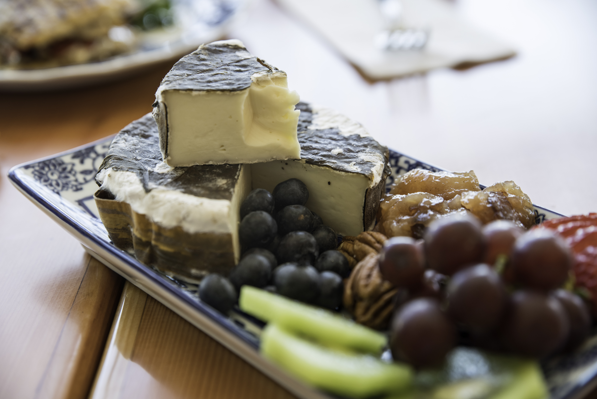
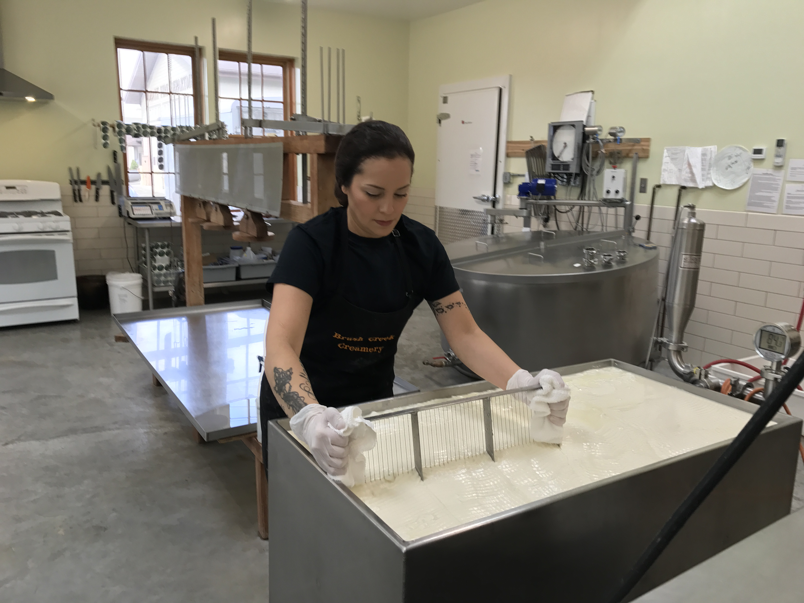

Click any cheese below to learn more — how it’s made, what makes it special, and why it wins awards.
Making cheese by hand

Visit us at 307 Main Street in Deary, Idaho or place an order online.
Order Cheeses